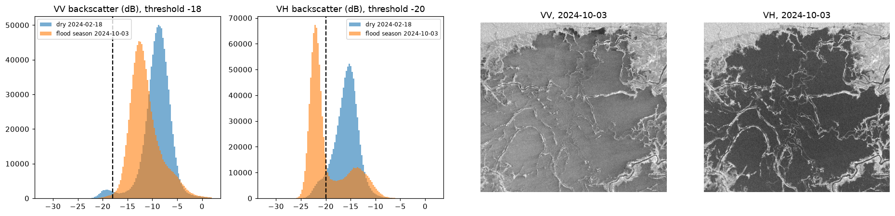
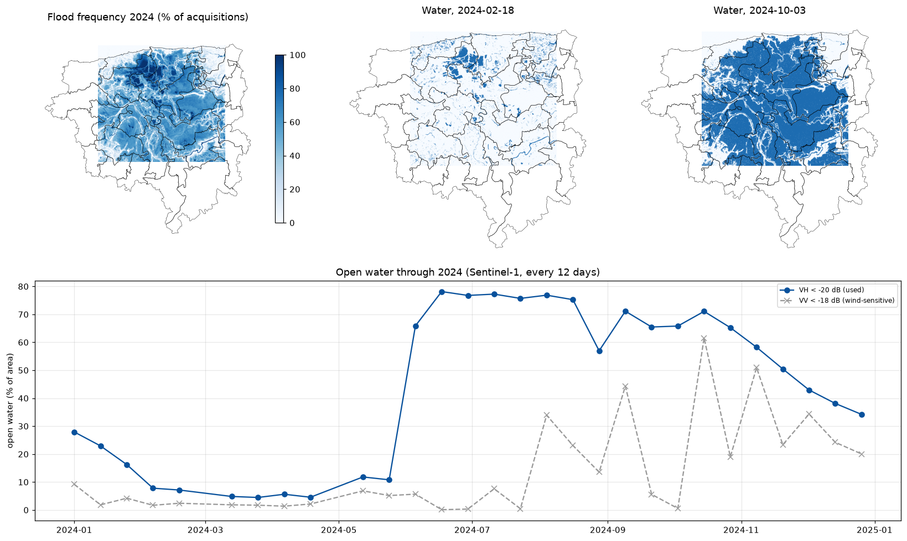

Capstone: A Cloud Web-GIS for Flood Monitoring in the Haor Basin
The haor basin of north-eastern Bangladesh floods every monsoon. For about half the year its wetlands and rice fields lie under water; in the dry season farmers grow Boro rice, the region’s main crop, and an early flash flood before harvest can destroy it. District officers, NGOs and researchers need to know where water is, union by union, through the year, in a form they can open in a browser or pull into their own tools.
This capstone builds that system end to end with the methods of Module 08, for the haors around Tanguar Haor and Sunamganj town in 2024:
Step
What
From notebook
Find data
Sentinel-1 radar (sees through monsoon clouds) from a STAC catalogue
07_01, 07_09
Process
Water maps every 12 days, flood frequency, statistics per union
07_08
Validate
Against Sentinel-2 (Notebook 07_10’s monitor) and the JRC 1984-2020 water record
07_09, 07_10
Store
Cloud-optimised GeoTIFFs, GeoParquet, a STAC catalogue
07_01, 07_02
Serve
Tiles and OGC API: Features (geolattice.web) inside a FastAPI service with its own endpoints
The service: FastAPI with OGC endpoints, tiles and a web map
Tests and operations
Summary: from data to decisions
Setup
Installation. This notebook needs installation option 6 (every GeoLattice module): pip install "geolattice[all]". See “Installation options” in the GeoLattice README. It also uses fastapi, which no GeoLattice option installs: pip install fastapi.
Code
# Imports, AOI parameters, and Planetary Computer client for the capstone%matplotlib inlineimport difflibimport jsonimport shutilimport timeimport warningsfrom datetime import datetime, timezonefrom pathlib import Pathwarnings.filterwarnings("ignore")import numpy as npimport pandas as pdimport geopandas as gpdimport shapelyimport rasteriofrom rasterio.features import rasterizeimport matplotlib.pyplot as pltimport pystacimport pystac_clientimport planetary_computerimport odc.stacfrom fastapi import FastAPI, HTTPException, Queryfrom fastapi.middleware.gzip import GZipMiddlewarefrom fastapi.responses import HTMLResponsefrom fastapi.staticfiles import StaticFilesfrom fastapi.testclient import TestClientfrom IPython.display import IFrame, displayimport geolatticeimport geolattice.web as webfrom geolattice.vector import write_geoparquet, read_geoparquetplt.rcParams.update({"figure.dpi": 110})DATA = Path("../../../Data")BD = DATA /"00_shared"/"vector_data"/"Bangladesh"WEB = DATA /"00_shared"/"data_web_cloud_gis"OUT = WEB /"08_11_outputs"# Fresh output tree; water masks land in OUT/waterif OUT.exists(): shutil.rmtree(OUT)(OUT /"water").mkdir(parents=True)AOI = (90.95, 24.95, 91.25, 25.20) # ~30 x 28 km: Tanguar Haor, Sunamganj town and surrounding haorsCRS, RES ="EPSG:32646", 30# UTM 46N, 30 mYEAR =2024TRACK =41# Sentinel-1 relative orbit (ascending): one viewing geometryTHRESHOLD_DB =-20.0# VH backscatter below this is open water (Section 4)VV_THRESHOLD_DB =-18.0# the common VV rule, kept for comparisonpcc = pystac_client.Client.open("https://planetarycomputer.microsoft.com/api/stac/v1", modifier=planetary_computer.sign_inplace)print("geolattice", geolattice.__version__, "| outputs:", OUT)
Planetary Computer (STAC + COGs) Processing (this notebook / a scheduled container)
┌─────────────────────────────┐ search ┌──────────────────────────────────────────────┐
│ sentinel-1-rtc jrc-gsw │ ──────────► │ odc-stac load → dB → water mask (VH < −20 dB)│
└─────────────────────────────┘ read │ per-union statistics, flood frequency │
└───────────────┬──────────────────────────────┘
│ write (idempotent)
Storage (object storage in production)▼
┌──────────────────────────────────────────────────────────────┐
│ water/*.tif (COG) · flood_frequency.tif (COG) │
│ unions_flood.parquet (GeoParquet) · union_series.parquet │
│ stac/catalog.json (STAC) │
└───────────────┬───────────────────────────────┬──────────────┘
│ │
Service (FastAPI + geolattice.web) Any STAC / GIS client
/ogc tiles + OGC API Features (geolattice.web.create_app) (QGIS, GDAL, STAC Browser)
/api dates, union time series, rankings
/map web map (Leaflet) calling /ogc and /api
Processing writes files; the service only reads them. Each part can be replaced or scaled without touching the others: the files can move to S3 or Azure Blob, the service can run in several containers behind a load balancer, and the processing can run on a schedule (Notebook 08_10).
Data: Sentinel-1 over the haors
Radar sees through cloud, so it observes the haors throughout the monsoon, when Sentinel-2 saw nothing usable (Notebook 08_10). Open water reflects the radar pulse away from the satellite and appears dark. We use the RTC product (backscatter normalised for terrain) and a single relative orbit, so that every acquisition has the same viewing geometry and the time series is comparable.
Code
# Search Sentinel-1 RTC for the year and summarize orbits and revisit gapst0 = time.perf_counter()items =list(pcc.search(collections=["sentinel-1-rtc"], bbox=list(AOI), datetime=f"{YEAR}-01-01/{YEAR}-12-31").items())tracks = pd.DataFrame([{"track": i.properties["sat:relative_orbit"], "direction": i.properties["sat:orbit_state"],"platform": i.properties["platform"], "date": i.datetime.date()} for i in items])print(f"{len(items)} Sentinel-1 RTC items over the area in {YEAR} ({time.perf_counter() - t0:.1f} s)")display(tracks.groupby(["track", "direction", "platform"]).date.agg(["count", "nunique", "min", "max"]) .rename(columns={"count": "items", "nunique": "dates"}))# Keep only the chosen relative orbit so geometry stays consistentby_day = {}for i in items:if i.properties["sat:relative_orbit"] == TRACK: by_day.setdefault(i.datetime.date(), []).append(i)dates =sorted(by_day)gaps = np.diff(pd.to_datetime(dates)).astype("timedelta64[D]").astype(int)print(f"track {TRACK}: {len(dates)} dates, gaps between acquisitions: {sorted(set(gaps))} days")
146 Sentinel-1 RTC items over the area in 2024 (1.5 s)
items
dates
min
max
track
direction
platform
41
ascending
SENTINEL-1A
56
29
2024-01-01
2024-12-26
77
descending
SENTINEL-1A
25
25
2024-01-03
2024-12-04
114
ascending
SENTINEL-1A
26
26
2024-01-06
2024-12-19
150
descending
SENTINEL-1A
39
21
2024-01-20
2024-12-21
track 41: 29 dates, gaps between acquisitions: [np.int64(12), np.int64(24)] days
Planetary Computer holds 146 Sentinel-1 RTC items over the area for 2024, on four relative orbits, all from Sentinel-1A (Sentinel-1B failed in December 2021). Ascending track 41 covers the area on 29 dates, every 12 days, with one 24-day gap where an acquisition is missing. Two adjacent frames make up each date and are mosaicked by date.
Water from radar: choosing the band and the threshold
Calm open water reflects the radar pulse away from the satellite, so it is dark in both polarisations: co-polarised VV and cross-polarised VH. Wind and waves roughen the water surface and brighten VV much more than VH. The haors are large, shallow and windy in the monsoon, so we compare both bands on a dry-season and a flood-season date before choosing.
Code
# Load VV/VH in dB for dry and flood-season dates; compare water thresholdsdef load_db(day):"VV and VH backscatter in dB for one acquisition date on the 30 m AOI grid (average resampling reduces speckle)." ds = odc.stac.load(by_day[day], bands=["vv", "vh"], bbox=list(AOI), crs=CRS, resolution=RES, groupby="solar_day", resampling="average").isel(time=0) out = {}for band in ["vv", "vh"]: v = ds[band].values.astype("float32")with np.errstate(divide="ignore", invalid="ignore"): out[band] = np.where(v >0, 10* np.log10(v), np.nan)return out, ds.odc.geoboxdry =min(dates, key=lambda d: abs((pd.Timestamp(d) - pd.Timestamp(f"{YEAR}-02-15")).days))wet =min(dates, key=lambda d: abs((pd.Timestamp(d) - pd.Timestamp(f"{YEAR}-10-03")).days))db_dry, geobox = load_db(dry)db_wet, _ = load_db(wet)# Histograms and grayscale maps, then a small threshold sensitivity tablefig, ax = plt.subplots(1, 4, figsize=(17, 4.2))for a, band, thr in [(ax[0], "vv", VV_THRESHOLD_DB), (ax[1], "vh", THRESHOLD_DB)]: bins = np.linspace(-32, 2, 120) a.hist(db_dry[band][np.isfinite(db_dry[band])], bins=bins, alpha=0.6, label=f"dry {dry}") a.hist(db_wet[band][np.isfinite(db_wet[band])], bins=bins, alpha=0.6, label=f"flood season {wet}") a.axvline(thr, color="k", ls="--"); a.set_title(f"{band.upper()} backscatter (dB), threshold {thr:g}"); a.legend(fontsize=8)for a, band in [(ax[2], "vv"), (ax[3], "vh")]: a.imshow(db_wet[band], cmap="gray", vmin=-28if band =="vh"else-25, vmax=-8if band =="vh"else0) a.set_title(f"{band.upper()}, {wet}"); a.set_axis_off()plt.tight_layout(); plt.show()sens = pd.DataFrame({**{f"VV < {t}": [np.nanmean(db_dry["vv"] < t), np.nanmean(db_wet["vv"] < t)] for t in [-20, -18, -16]},**{f"VH < {t}": [np.nanmean(db_dry["vh"] < t), np.nanmean(db_wet["vh"] < t)] for t in [-22, -21, -20, -19, -18]}}, index=[f"dry {dry}", f"flood season {wet}"])print("share of the area classified as water (%):")(sens *100).round(1)

share of the area classified as water (%):
VV < -20
VV < -18
VV < -16
VH < -22
VH < -21
VH < -20
VH < -19
VH < -18
dry 2024-02-18
0.7
2.4
3.6
1.8
4.1
7.1
11.6
18.5
flood season 2024-10-03
0.1
0.6
3.1
35.3
56.2
65.8
69.5
72.0
The dry and flood scenes behave very differently in the two bands:
Rule
Dry season, 18 February
Flood season, 3 October
VV < −18 dB
2.4% water
0.6% water
VH < −20 dB
7.1% water
65.8% water
On 3 October the haors were full, yet VV classified only 0.6% of the area as water: the images show the open water grey and textured in VV, roughened by wind, and uniformly dark in VH. VH separates the two seasons cleanly. Its water mode sits near −22 dB, close to the sensor’s noise floor, and its land mode is around −15 dB. A threshold of −20 dB lies between them; moving it by ±1 dB changes the flood-season estimate by about 4-10 points.
Processing 2024: water maps every 12 days
For each acquisition the processing step loads VV and VH, classifies water from VH, and writes a small Cloud-Optimised GeoTIFF (1 = water, 0 = land, 255 = no data), plus a JSON sidecar with the area’s water share under both rules. It skips dates whose COG already exists, so rerunning it, or running it on a schedule, only processes new acquisitions.
Code
# Write an idempotent water-mask COG for every acquisition datedef water_path(day):return OUT /"water"/f"water_{day}.tif"def process_day(day):"Water mask for one date as a COG; skipped if it exists (idempotent)." path = water_path(day)if path.exists():return"skipped" db, gb = load_db(day) ok = np.isfinite(db["vh"]) mask = np.where(ok, (db["vh"] < THRESHOLD_DB).astype("uint8"), 255).astype("uint8") path.with_suffix(".json").write_text(json.dumps({"valid_pct": float(ok.mean() *100), "vh_water_pct": float(np.nanmean(db["vh"][ok] < THRESHOLD_DB) *100),"vv_water_pct": float(np.nanmean(db["vv"][np.isfinite(db["vv"])] < VV_THRESHOLD_DB) *100),"median_vv_db": float(np.nanmedian(db["vv"])), "median_vh_db": float(np.nanmedian(db["vh"]))})) tmp = path.with_suffix(".tmp.tif")with rasterio.open(tmp, "w", driver="GTiff", width=mask.shape[1], height=mask.shape[0], count=1, dtype="uint8", crs=CRS, transform=gb.affine, nodata=255) as dst: dst.write(mask, 1) web.to_cog(tmp, path, compress="DEFLATE", overview_resampling="NEAREST") tmp.unlink()return"processed"# First pass processes; second pass should skip existing COGst0 = time.perf_counter()status = {d: process_day(d) for d in dates}first_run = time.perf_counter() - t0t0 = time.perf_counter()status_again = {d: process_day(d) for d in dates}second_run = time.perf_counter() - t0print(f"first run: {list(status.values()).count('processed')} dates processed in {first_run:.0f} s; "f"second run: {list(status_again.values()).count('skipped')} skipped in {second_run:.2f} s")cogs =sorted((OUT /"water").glob("*.tif"))print(f"{len(cogs)} COGs, {sum(p.stat().st_size for p in cogs) /1e6:.1f} MB in total;", web.validate_cog(cogs[0]))rules = pd.DataFrame([json.loads(water_path(d).with_suffix(".json").read_text()) for d in dates], index=pd.to_datetime(dates))monsoon = rules.loc[f"{YEAR}-06-01":f"{YEAR}-10-31"]print("monsoon (June-October) water share, % of area:")display(pd.DataFrame({rule: {"min": monsoon[c].min(), "max": monsoon[c].max(),"mean absolute change between acquisitions": monsoon[c].diff().abs().mean()}for rule, c in [(f"VV < {VV_THRESHOLD_DB:g} dB", "vv_water_pct"), (f"VH < {THRESHOLD_DB:g} dB", "vh_water_pct")]}).T.round(1))print(f"median VV over the area ranged from {monsoon.median_vv_db.min():.1f} to {monsoon.median_vv_db.max():.1f} dB in the monsoon; "f"median VH from {monsoon.median_vh_db.min():.1f} to {monsoon.median_vh_db.max():.1f} dB")
first run: 29 dates processed in 294 s; second run: 29 skipped in 0.00 s
29 COGs, 2.0 MB in total; ../../../data/data_web_cloud_gis/08_11_outputs/water/water_2024-01-01.tif: valid Cloud-Optimized GeoTIFF
monsoon (June-October) water share, % of area:
min
max
mean absolute change between acquisitions
VV < -18 dB
0.1
61.5
21.0
VH < -20 dB
57.0
78.2
5.7
median VV over the area ranged from -19.8 to -10.9 dB in the monsoon; median VH from -22.2 to -21.0 dB
Flood frequency and statistics per union
The water maps are stacked to give, for every pixel, the share of 2024 acquisitions in which it was water (flood frequency). For administrative statistics each union is rasterised once onto the same grid; the water share of every union on every date is then a fast count.
Code
# Stack water masks into flood frequency and zonal stats by unionwith rasterio.open(cogs[0]) as src: transform, shape = src.transform, src.shapestack = np.stack([rasterio.open(p).read(1) for p in cogs]) # (dates, rows, cols)valid = stack !=255water = (stack ==1)frequency = np.where(valid.any(0), water.sum(0) / np.maximum(valid.sum(0), 1) *100, np.nan).astype("float32")with rasterio.open(OUT /"flood_frequency.tmp.tif", "w", driver="GTiff", width=shape[1], height=shape[0], count=1, dtype="float32", crs=CRS, transform=transform, nodata=np.nan) as dst: dst.write(frequency, 1)web.to_cog(OUT /"flood_frequency.tmp.tif", OUT /"flood_frequency.tif"); (OUT /"flood_frequency.tmp.tif").unlink()# Rasterize Bangladesh unions and compute water % per union and dateunions = gpd.read_file(BD /"Shapefiles"/"bd_union_GCS.shp")[["ADM4_EN", "ADM4_PCODE", "ADM3_EN", "ADM2_EN", "geometry"]]unions = unions[unions.intersects(shapely.box(*AOI))].reset_index(drop=True)zones = rasterize([(g, i +1) for i, g inenumerate(unions.to_crs(CRS).geometry)], out_shape=shape, transform=transform, fill=0)box_utm = gpd.GeoSeries([shapely.box(*AOI)], crs=4326).to_crs(CRS).iloc[0]cover = (unions.to_crs(CRS).intersection(box_utm).area / unions.to_crs(CRS).area).values # share of each union inside the AOIrows = []for k, day inenumerate(dates): w = np.bincount(zones.ravel(), weights=water[k].ravel(), minlength=len(unions) +1)[1:] v = np.bincount(zones.ravel(), weights=valid[k].ravel(), minlength=len(unions) +1)[1:] rows.append(pd.DataFrame({"ADM4_PCODE": unions.ADM4_PCODE, "date": pd.Timestamp(day),"water_pct": np.where(v >0, w / np.maximum(v, 1) *100, np.nan)}))series = pd.concat(rows, ignore_index=True)series["month"] = series.date.dt.monthsummary = series.groupby("ADM4_PCODE").agg(water_min=("water_pct", "min"), water_max=("water_pct", "max"), water_mean=("water_pct", "mean"))summary["months_over_50pct"] = series[series.water_pct >50].groupby("ADM4_PCODE").month.nunique().reindex(summary.index).fillna(0).astype(int)peak = series.loc[series.groupby("ADM4_PCODE").water_pct.idxmax(), ["ADM4_PCODE", "date"]].set_index("ADM4_PCODE").datesummary["peak_date"] = peak.dt.strftime("%Y-%m-%d")unions = unions.merge(summary.round(1), left_on="ADM4_PCODE", right_index=True)unions["inside_aoi_pct"] = (cover *100).round(0)area = series.groupby("date").water_pct.median()aoi_water = pd.Series([water[k][valid[k]].mean() *100for k inrange(len(dates))], index=pd.to_datetime(dates), name="AOI water %")print(f"{len(unions)} unions intersect the area; {len(dates)} dates; series table {len(series):,} rows")print(f"area-wide water: minimum {aoi_water.min():.1f} % ({aoi_water.idxmin().date()}), maximum {aoi_water.max():.1f} % ({aoi_water.idxmax().date()})")display(unions.drop(columns="geometry").sort_values("water_mean", ascending=False).head(8))
28 unions intersect the area; 29 dates; series table 812 rows
area-wide water: minimum 4.5 % (2024-03-25), maximum 78.2 % (2024-06-17)
ADM4_EN
ADM4_PCODE
ADM3_EN
ADM2_EN
water_min
water_max
water_mean
months_over_50pct
peak_date
inside_aoi_pct
1
Bara Kharpan
BD45724011
Kalmakanda
Netrakona
1.6
99.9
61.6
8
2024-08-04
2.0
9
Dakshin Sreepur
BD60909233
Tahirpur
Sunamganj
9.0
95.4
60.9
7
2024-08-28
100.0
21
Tahirpur
BD60909264
Tahirpur
Sunamganj
2.8
93.0
58.3
8
2024-07-11
100.0
10
Dharmapasha
BD60903238
Dharampasha
Sunamganj
0.6
99.7
55.2
7
2024-08-16
11.0
2
Beheli
BD60905013
Jamalganj
Sunamganj
2.0
93.5
54.8
7
2024-06-17
100.0
3
Chamardani
BD60903223
Dharampasha
Sunamganj
3.2
97.5
53.8
7
2024-08-28
100.0
8
Dakshin Bongshikunda
BD60903235
Dharampasha
Sunamganj
4.9
86.4
52.9
6
2024-08-04
100.0
12
Fenarbak
BD60905054
Jamalganj
Sunamganj
2.4
95.6
51.8
7
2024-08-16
2.0
Code
# Map flood frequency, dry/wet water masks, and the AOI open-water time seriesfig = plt.figure(figsize=(15, 9))gs = fig.add_gridspec(2, 3)ax0 = fig.add_subplot(gs[0, 0]); ax1 = fig.add_subplot(gs[0, 1]); ax2 = fig.add_subplot(gs[0, 2]); ax3 = fig.add_subplot(gs[1, :])extent = [transform.c, transform.c + transform.a * shape[1], transform.f + transform.e * shape[0], transform.f]im = ax0.imshow(frequency, cmap="Blues", vmin=0, vmax=100, extent=extent)unions.to_crs(CRS).boundary.plot(ax=ax0, color="k", linewidth=0.3)ax0.set_title("Flood frequency 2024 (% of acquisitions)"); ax0.set_axis_off(); fig.colorbar(im, ax=ax0, shrink=0.7)for a, k, title in [(ax1, dates.index(dry), f"Water, {dry}"), (ax2, dates.index(wet), f"Water, {wet}")]: a.imshow(np.where(valid[k], water[k], np.nan), cmap="Blues", vmin=0, vmax=1.3, extent=extent) unions.to_crs(CRS).boundary.plot(ax=a, color="k", linewidth=0.3); a.set_title(title); a.set_axis_off()ax3.plot(aoi_water.index, aoi_water.values, "o-", color="#08519c", label=f"VH < {THRESHOLD_DB:g} dB (used)")ax3.plot(rules.index, rules.vv_water_pct, "x--", color="#999999", label=f"VV < {VV_THRESHOLD_DB:g} dB (wind-sensitive)")ax3.legend(fontsize=8)ax3.set_ylabel("open water (% of area)"); ax3.set_title(f"Open water through {YEAR} (Sentinel-1, every 12 days)")ax3.grid(alpha=0.3)plt.tight_layout(); plt.show()

Processing the 29 dates took 294 s, network reads included. The rerun skipped every date in no time, which is the property a scheduled job needs. The 29 water maps total 2.0 MB as COGs.
The two rules over the monsoon (June to October):
Rule
Water share
Mean change between acquisitions
Median backscatter
VV < −18 dB
0.1% to 61.5%
21.0 points
−19.8 to −10.9 dB
VH < −20 dB
57.0% to 78.2%
5.7 points
−22.2 to −21.0 dB
The VV jumps are not floods coming and going every 12 days. They follow the wind, which raised the area’s median VV by up to 9 dB on some dates while median VH stayed within about 1 dB.
The year in the haors (VH):
January: water drained from 28% of the area to 8% by early February.
Dry season: 4.5-8% from February to April, mostly permanent beels and rivers.
Rise: about 11% through May, then a jump to 66% by 5 June and a peak of 78.2% on 17 June, consistent with the early-monsoon floods reported in Sylhet division that month.
Monsoon: 57-77% until mid-October.
Recession: from 65% at the end of October to 34% by late December.
Unions: the 28 unions that intersect the area differ widely. Dakshin Sreepur, Tahirpur and Beheli, which lie entirely inside the area, were more than half under water in 7-8 months, with mean water shares of 55-61%. Some unions only touch the area (as little as 2% of their area inside), and their statistics describe only that part; the table’s inside_aoi_pct column says so.
Validation
Two independent checks:
Sentinel-2. Notebook 08_10’s monitor recorded the open-water fraction of Tanguar Haor (a sub-area of this AOI) from optical images. Where a Sentinel-2 observation lies within 3 days of a Sentinel-1 acquisition, the two estimates are compared for the same sub-area.
JRC Global Surface Water (1984-2020). Pixels that were water in most years’ records should be water in this year’s flood season, and dry-season water should fall on permanent water bodies.
Code
# Compare Sentinel-1 water over Tanguar Haor with optical results from Notebook 08_10TANGUAR = (91.02, 25.08, 91.14, 25.17)from rasterio.windows import from_boundsfrom rasterio.warp import transform_boundswin = from_bounds(*transform_bounds(4326, CRS, *TANGUAR), transform)r0, c0 =int(win.row_off), int(win.col_off)r1, c1 = r0 +int(win.height), c0 +int(win.width)s1_tanguar = pd.Series([water[k, r0:r1, c0:c1][valid[k, r0:r1, c0:c1]].mean() for k inrange(len(dates))], index=pd.to_datetime(dates), name="Sentinel-1")s2_path = WEB /"08_10_outputs"/"monitor_data"/"observations.parquet"if s2_path.exists(): s2 = pd.read_parquet(s2_path) s2 = s2[(s2["flags"] =="") & (s2.clear_fraction >=0.8)].set_index("date").water_fraction# Pair dates within 3 days and report correlation and bias pairs = []for d, v in s2.items(): k =int(np.argmin(np.abs(s1_tanguar.index - d)))ifabs((s1_tanguar.index[k] - d).days) <=3: pairs.append({"Sentinel-2 date": d.date(), "Sentinel-1 date": s1_tanguar.index[k].date(),"Sentinel-2 water": v, "Sentinel-1 water": s1_tanguar.iloc[k]}) pairs = pd.DataFrame(pairs)assertlen(pairs) >=3, "too few matching dates for a comparison" r = np.corrcoef(pairs["Sentinel-2 water"], pairs["Sentinel-1 water"])[0, 1] bias = (pairs["Sentinel-1 water"] - pairs["Sentinel-2 water"]).mean() display(pairs.round(3))print(f"{len(pairs)} pairs within 3 days: correlation {r:.2f}, mean difference (S1 - S2) {bias:+.3f}")else: pairs =Noneprint("Run Notebook 08_10 first for the Sentinel-2 comparison.")
Sentinel-2 date
Sentinel-1 date
Sentinel-2 water
Sentinel-1 water
0
2024-01-01
2024-01-01
0.313
0.462
1
2024-03-11
2024-03-13
0.081
0.176
2
2024-03-16
2024-03-13
0.068
0.176
3
2024-04-15
2024-04-18
0.106
0.201
4
2024-05-25
2024-05-24
0.501
0.416
5
2024-11-11
2024-11-08
0.849
0.803
6
2024-12-01
2024-12-02
0.690
0.640
7
2024-12-11
2024-12-14
0.615
0.581
8
2024-12-16
2024-12-14
0.558
0.581
9
2024-12-26
2024-12-26
0.515
0.514
10 pairs within 3 days: correlation 0.98, mean difference (S1 - S2) +0.026
Sentinel-2. Ten Sentinel-2 observations of Tanguar Haor had a Sentinel-1 acquisition within 3 days. The two agree closely: correlation 0.98 and a mean difference of +0.026.
From May to December the radar values are within 0.09 of the optical ones, mostly within 0.01-0.05.
In the dry season radar sees more water: 0.18-0.20 against 0.07-0.11 in March and April, and 0.46 against 0.31 on 1 January. The likely causes are wet bare soil and smooth harvested or flooded paddies, which are dark in VH. In January, receding water under emergent vegetation is classed differently by the two sensors.
JRC Global Surface Water.
JRC 1984-2020 occurrence
Water on 3 October 2024 (flood)
Water on 18 February 2024 (dry)
Often water (26-75%)
90.1%
1.9%
Mostly water (76-100%)
95.9%
31.6%
Never water
0.3%
6.0%
The flood-season map agrees with the long-term record. The 6% of never-water land classed as water in February is the dry-season false-positive rate of the VH rule. It is small for flood mapping but matters for exact dry-season areas, where Sentinel-2 is the better source (Notebook 08_10).
Storage: COGs, GeoParquet and a STAC catalogue
The products are written in the cloud-native formats of Notebooks 08_01 and 08_02, and described in a STAC catalogue so that any STAC client can find them by place and date.
Code
# Persist union tables and build a self-contained STAC catalogue of water COGswrite_geoparquet(OUT /"unions_flood.parquet", unions)series.to_parquet(OUT /"union_series.parquet", index=False)print(web.geoparquet_info(OUT /"unions_flood.parquet"))catalog = pystac.Catalog(id="haor-flood-2024", description=f"Sentinel-1 open-water maps of the Sunamganj haors, {YEAR} (GeoLattice Notebook 08_11)")coll = pystac.Collection(id="haor-water", description="Open water from Sentinel-1 RTC VH < -20 dB, 30 m, every 12 days", extent=pystac.Extent(pystac.SpatialExtent([list(AOI)]), pystac.TemporalExtent([[datetime(YEAR, 1, 1, tzinfo=timezone.utc), datetime(YEAR, 12, 31, tzinfo=timezone.utc)]])), license="CC-BY-4.0", providers=[pystac.Provider("Contains modified Copernicus Sentinel data, via Microsoft Planetary Computer", roles=["producer"])])catalog.add_child(coll)for day, p, k inzip(dates, cogs, range(len(dates))): item = pystac.Item(id=f"water-{day}", geometry=shapely.geometry.mapping(shapely.box(*AOI)), bbox=list(AOI), datetime=datetime(day.year, day.month, day.day, tzinfo=timezone.utc), properties={"water_pct": round(float(aoi_water.iloc[k]), 2), "sar:polarizations": ["VH"],"sat:relative_orbit": TRACK, "processing:threshold_db": THRESHOLD_DB,"source_items": [i.idfor i in by_day[day]]}) item.add_asset("water", pystac.Asset(href=f"../../water/{p.name}", media_type=pystac.MediaType.COG, roles=["data"], title="1 = water, 0 = land, 255 = no data")) coll.add_item(item)catalog.normalize_hrefs(str((OUT /"stac").resolve()))catalog.save(catalog_type=pystac.CatalogType.SELF_CONTAINED)n_items =len(list(catalog.get_items(recursive=True)))try: validated = catalog.validate_all()print(f"STAC catalogue: {n_items} items, {validated} objects validated against the STAC schemas")exceptExceptionas exc:print(f"STAC catalogue: {n_items} items written (schema validation not run: {type(exc).__name__})")# Fix asset hrefs to be relative to each item file (catalogue is self-contained and portable)for item_file in (OUT /"stac").rglob("water-*.json"): d = json.loads(item_file.read_text()); d["assets"]["water"]["href"] =f"../../../water/{Path(d['assets']['water']['href']).name}" item_file.write_text(json.dumps(d, indent=1))first =next((OUT /"stac").rglob("water-*.json"))print("example item:", first.relative_to(OUT), "->", json.loads(first.read_text())["assets"]["water"]["href"],"| resolves:", (first.parent / json.loads(first.read_text())["assets"]["water"]["href"]).resolve().exists())pd.DataFrame([{"product": p.relative_to(OUT).parts[0] if p.parent != OUT else p.name, "bytes": p.stat().st_size}for p in OUT.rglob("*") if p.is_file()]).groupby("product").bytes.agg(["count", "sum"]).assign(MB=lambda t: (t["sum"] /1e6).round(2))
{'version': '1.1.0', 'primary_column': 'geometry', 'encoding': 'WKB', 'crs': <Geographic 2D CRS: EPSG:4326>
Name: WGS 84
Axis Info [ellipsoidal]:
- Lat[north]: Geodetic latitude (degree)
- Lon[east]: Geodetic longitude (degree)
Area of Use:
- name: World.
- bounds: (-180.0, -90.0, 180.0, 90.0)
Datum: World Geodetic System 1984 ensemble
- Ellipsoid: WGS 84
- Prime Meridian: Greenwich
, 'bbox': [90.82261064500005, 24.79260454100006, 91.31413922900003, 25.20736202200004], 'geometry_types': ['MultiPolygon', 'Polygon'], 'covering': True, 'num_rows': 28, 'num_row_groups': 1, 'columns': ['ADM4_EN', 'ADM4_PCODE', 'ADM3_EN', 'ADM2_EN', 'geometry', 'water_min', 'water_max', 'water_mean', 'months_over_50pct', 'peak_date', 'inside_aoi_pct', 'bbox']}
STAC catalogue: 29 items, 29 objects validated against the STAC schemas
example item: stac/haor-water/water-2024-03-13/water-2024-03-13.json -> ../../../water/water_2024-03-13.tif | resolves: True
count
sum
MB
product
flood_frequency.tif
1
1288628
1.29
stac
31
42764
0.04
union_series.parquet
1
10780
0.01
unions_flood.parquet
1
919951
0.92
water
58
2051467
2.05
All products together take about 4.3 MB:
29 water COGs, each with a JSON sidecar (2.05 MB);
the flood-frequency COG (1.3 MB);
unions with their statistics as GeoParquet 1.1, with a bbox covering column (0.9 MB);
the long table of union water shares by date (11 kB);
a STAC catalogue of 29 items (43 kB).
All 29 STAC items validated against the STAC schemas. Each item’s asset link is relative and resolves to its COG, so the folder can be copied to any static host or bucket as is.
The service: FastAPI with OGC endpoints, tiles and a web map
One FastAPI application serves everything. geolattice.web.create_app provides the standard parts (XYZ tiles of the flood frequency and the latest water map, OGC API: Features for the unions), mounted at /ogc. Custom endpoints under /api answer the questions the dashboard asks. A web page at /map combines both, and the STAC catalogue is published as static files at /stac.
Code
# Assemble the FastAPI app: OGC tiles/features plus custom flood statistics routeslatest = cogs[-1]UNIONS = read_geoparquet(OUT /"unions_flood.parquet")SERIES = pd.read_parquet(OUT /"union_series.parquet")NAMES = {n.lower(): c for n, c inzip(UNIONS.ADM4_EN, UNIONS.ADM4_PCODE)}app = FastAPI(title="Haor Flood Monitor", version="1.0.0", description=f"Sentinel-1 open water in the Sunamganj haors, {YEAR}: tiles, OGC API Features and statistics.")app.add_middleware(GZipMiddleware, minimum_size=1000)ogc = web.create_app( rasters={"flood_frequency": {"path": OUT /"flood_frequency.tif", "colormap": "Blues", "rescale": (0, 100)},"water_latest": {"path": latest, "colormap": "Blues", "rescale": (0, 1.3), "nodata": 255}}, vectors={"unions": UNIONS[["ADM4_EN", "ADM4_PCODE", "ADM3_EN", "water_min", "water_max", "water_mean","months_over_50pct", "peak_date", "geometry"]]}, title="Haor Flood Monitor: OGC API")app.mount("/ogc", ogc)@app.get("/api/dates", tags=["api"])def list_dates():"Acquisition dates with the open-water share of the whole area."return [{"date": str(d.date()), "water_pct": round(float(v), 2)} for d, v in aoi_water.items()]@app.get("/api/unions/{name}", tags=["api"])def union_series(name: str):"Water share of one union on every date, and its summary." code_ = NAMES.get(name.lower()) or (name if name inset(UNIONS.ADM4_PCODE) elseNone)if code_ isNone:raise HTTPException(404, {"message": f"No union {name!r} in the monitored area","suggestions": difflib.get_close_matches(name.title(), list(UNIONS.ADM4_EN), 3, 0.6)}) row = UNIONS[UNIONS.ADM4_PCODE == code_].iloc[0] s = SERIES[SERIES.ADM4_PCODE == code_].sort_values("date")return {"union": row.ADM4_EN, "pcode": code_, "upazila": row.ADM3_EN, "summary": { k: (Noneif pd.isna(row[k]) else (row[k].item() ifhasattr(row[k], "item") else row[k]))for k in ["water_min", "water_max", "water_mean", "months_over_50pct", "peak_date"]},"series": [{"date": str(d.date()), "water_pct": Noneif pd.isna(v) elseround(float(v), 1)}for d, v inzip(s.date, s.water_pct)]}@app.get("/api/rank", tags=["api"])def rank(date: str= Query(..., description="Acquisition date YYYY-MM-DD"), limit: int= Query(10, ge=1, le=100)):"The most flooded unions on one acquisition date."try: when = pd.Timestamp(date)exceptValueError:raise HTTPException(422, f"Not a valid date: {date!r} (use YYYY-MM-DD)") fromNone s = SERIES[SERIES.date == when]if s.empty:raise HTTPException(404, f"No acquisition on {date}; see /api/dates") top = s.nlargest(limit, "water_pct").merge(UNIONS[["ADM4_PCODE", "ADM4_EN", "ADM3_EN"]], on="ADM4_PCODE")return [{"union": r.ADM4_EN, "upazila": r.ADM3_EN, "water_pct": round(float(r.water_pct), 1)} for r in top.itertuples()]app.mount("/stac", StaticFiles(directory=OUT, html=False), name="stac") # serves stac/ and water/ for STAC clients
The map is served by this notebook’s kernel and works while the kernel runs: switch between the flood-frequency and latest-water layers, and click a union for its 2024 water series. The same service answers programs:
The custom API: the dates with the area’s water share, the five most flooded unions at the 17 June peak (Dharmapasha and Bara Kharpan at about 98%), and the full series of Uttar Sreepur (water 3.8-80.7%, 7 months over half flooded, peak on 17 June).
The mounted OGC service: conformance, union features and TileJSON.
A PNG tile of the flood frequency (130 kB at zoom 12).
The STAC catalogue, and the OpenAPI description of the whole service.
The web map was checked in a browser. The flood-frequency tiles draw over satellite imagery with the union outlines, and clicking Uttar Sreepur fetched its series from /api and drew it in the popup.
Tests and operations
The service’s promises, as tests (Notebook 08_06 style), run against the app without a network:
Code
# In-notebook regression tests for API behaviour, OGC mounts, and COG productstc = TestClient(app)def test_dates_cover_the_year(): d = tc.get("/api/dates").json()assertlen(d) ==len(dates) and d[0]["date"].startswith(str(YEAR)) andall(0<= x["water_pct"] <=100for x in d)def test_union_lookup_by_name_and_code_and_suggestions(): code_ = UNIONS.ADM4_PCODE.iloc[0]assert tc.get(f"/api/unions/{code_}").status_code ==200assert tc.get(f"/api/unions/{UNIONS.ADM4_EN.iloc[0].upper()}").status_code ==200 r = tc.get("/api/unions/Uttar Sripur")assert r.status_code ==404and r.json()["detail"]["suggestions"]def test_series_matches_stored_table(): code_ = UNIONS.ADM4_PCODE.iloc[0] got = [x["water_pct"] for x in tc.get(f"/api/unions/{code_}").json()["series"]] want = SERIES[SERIES.ADM4_PCODE == code_].sort_values("date").water_pct.round(1).tolist()assert np.allclose(np.array(got, float), np.array(want, float), equal_nan=True)def test_rank_is_sorted_and_validates_dates(): r = tc.get("/api/rank", params={"date": peak_day, "limit": 10}).json()assert [x["water_pct"] for x in r] ==sorted([x["water_pct"] for x in r], reverse=True)assert tc.get("/api/rank", params={"date": "2024-02-30"}).status_code in (404, 422)def test_ogc_and_tiles_work_under_the_mount():assert tc.get("/ogc/conformance").status_code ==200assert tc.get("/ogc/collections/unions/items", params={"limit": 3}).json()["numberReturned"] ==3assert tc.get(f"/ogc/tiles/flood_frequency/{t.z}/{t.x}/{t.y}.png").status_code ==200def test_processing_is_idempotent():assertall(process_day(d) =="skipped"for d in dates[:3])def test_products_are_valid_cogs():assert web.validate_cog(OUT /"flood_frequency.tif").valid and web.validate_cog(cogs[0]).validresults = []for name, f in [(n, f) for n, f inlist(globals().items()) if n.startswith("test_") andcallable(f)]:try: f(); results.append((name, "PASS", ""))exceptExceptionas exc: results.append((name, "FAIL", f"{type(exc).__name__}: {exc}"))pd.DataFrame(results, columns=["test", "result", "error"])
test
result
error
0
test_dates_cover_the_year
PASS
1
test_union_lookup_by_name_and_code_and_suggest...
PASS
2
test_series_matches_stored_table
PASS
3
test_rank_is_sorted_and_validates_dates
PASS
4
test_ogc_and_tiles_work_under_the_mount
PASS
5
test_processing_is_idempotent
PASS
6
test_products_are_valid_cogs
PASS
Operating the system. The pieces from Notebook 08_10 apply directly:
Concern
How
Updates
Run the processing (Sections 5-8) on a schedule after each Sentinel-1 acquisition (every 12 days on one track); process_day skips existing dates
Packaging
Processing and service as two container images sharing the product storage
Storage
COGs, GeoParquet and STAC in object storage (S3, Azure Blob); the service reads them over HTTP with range requests (Notebook 08_02)
Serving
uvicorn app:app --workers 4 behind HTTPS (Notebook 08_05), a CDN in front of tiles
Quality
The tests above in CI; alert when an update fails or when water shares jump implausibly
Cost
Processing a year here took minutes on one machine; a scheduled container on a small VM or a batch job costs cents per run (Notebook 08_08)
Code
# Shut down the demo server and list the products left on diskserver.stop()print("service stopped; products in", OUT)print(sorted(p.name for p in OUT.iterdir()))
service stopped; products in ../../../data/data_web_cloud_gis/08_11_outputs
['flood_frequency.tif', 'stac', 'union_series.parquet', 'unions_flood.parquet', 'water']
Summary: from data to decisions
The capstone joined the module’s parts into one working system for the Sunamganj haors in 2024:
Data: 29 Sentinel-1 RTC acquisitions found through STAC and read lazily with odc-stac (08_09).
Method: a water rule chosen by evidence. VH < −20 dB was stable through the monsoon, while the common VV rule swung between 0.1% and 61.5% with the wind.
Results:
water rose from 4.5% of the area in March to 78.2% on 17 June;
it stayed above 57% until October and receded to 34% by December;
three fully covered unions were more than half under water in 7-8 months.
Validation: correlation 0.98 with Sentinel-2 (08_10), and agreement with 37 years of JRC water records. The known bias is about 6% false water on dry land in the dry season.
Products: COGs, GeoParquet and a validated STAC catalogue (08_01, 08_02), 4.3 MB in total.
Service: FastAPI with geolattice.web tiles and OGC API: Features (08_05, 08_06), and a web map calling the API (08_04, 08_07).
Operations: idempotent processing and seven passing service tests (08_10).
What the system adds beyond a map. Officers can see which unions flood first and longest, and when; researchers can pull the union series as GeoParquet or through OGC API: Features into their own tools; any STAC client can find the water maps by place and date; and the whole chain reruns itself as new radar images arrive.
Limitations to state with the results.
A single threshold misses water under vegetation (flooded rice and reeds can scatter strongly) and can mistake smooth dry surfaces and radar shadow for water.
VH water sits close to the sensor’s noise floor; the threshold (−20 dB) is tuned to this area and season and should be re-checked elsewhere.
Wind roughens open water. It made the common VV rule unusable here; VH is far less affected but not immune.
30 m pixels blur narrow channels.
Union statistics are only as good as the boundaries.
Exercises
Replace the fixed VH threshold by an automatic one per date (Otsu’s method on the dB histogram) and compare the water series and the validation of Section 7.
Add the descending track (relative orbit 150) to double the time resolution. What must you check before mixing tracks?
Detect early flash floods: unions whose water share rises by more than 20 points between two acquisitions in March-May, when Boro rice is still in the field. Add an /api/alerts endpoint.
Add Sentinel-2 NDVI of the cropland (Notebook 08_10’s monitor) to the union popups.
Package the processing as a haor_monitor-style project with tests, a Dockerfile and a schedule, and the service as a second image; write a compose.yaml that runs both.
References
Twele, A., Cao, W., Plank, S. & Martinis, S. (2016). Sentinel-1-based flood mapping: a fully automated processing chain. International Journal of Remote Sensing, 37(13), 2990-3004.
Uddin, K., Matin, M. A. & Meyer, F. J. (2019). Operational flood mapping using multi-temporal Sentinel-1 SAR images: a case study from Bangladesh. Remote Sensing, 11(13), 1581.
Pekel, J.-F. et al. (2016). High-resolution mapping of global surface water and its long-term changes. Nature, 540, 418-422.
Microsoft Planetary Computer: Sentinel-1 RTC. https://planetarycomputer.microsoft.com/dataset/sentinel-1-rtc